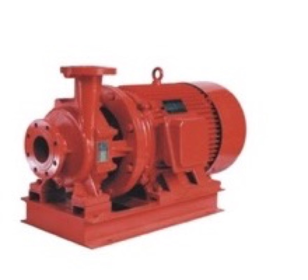
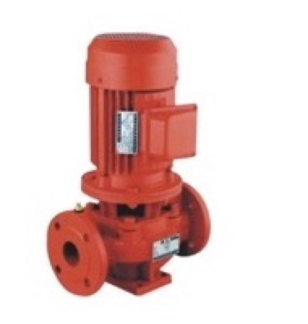

01
XBD fire pump packages
Fire-service pump configurations for projects that require a defined duty point, driver, controller and authority/documentation path. Request the curve, driver schedule and package scope for the exact model.
This catalog turns the supplied selection material into a buyer-facing starting point. Final model, curve, driver, approval and delivery are confirmed in writing for the project.A buyer-facing index
of pump families,
duty inputs and
project documents.
The supplied pump material covers multiple hydraulic and installation arrangements. The family names below are a sourcing index, not a substitute for a model datasheet.
Fire-service pump configurations for projects that require a defined duty point, driver, controller and authority/documentation path. Request the curve, driver schedule and package scope for the exact model.

Horizontal end-suction arrangements for water supply, transfer and project-specific fire or utility duties. Confirm duty point, base, coupling, seals, connections and installation interface.

Vertical arrangements for pressure boosting and space-sensitive installations. Confirm stage count, duty point, motor, materials, seals and connection dimensions.
Vertical and deep-well applications where well depth, submergence, column length, flow, head and motor arrangement are known.
Pressure-maintenance and booster duties selected from the actual pressure band, flow requirement and system responsibility split.
Existing nameplate, curve, connection dimensions, frequency, site conditions and installed-base information are required before an alternative is proposed.
The ranges below are transcribed as family-level starting points from the supplied selection sample. They are not a single pump specification. Ask for the exact model row, curve and material/ seal configuration.
| ISG / ISW / IRG / GRG / IHG / YG | Single-stage pipeline and related medium/temperature variants; flow, head, speed and temperature depend on series and model. |
|---|---|
| XBD vertical multistage fire pumps | Example table coverage approximately 2–162 L/s, 28–218 m head and 0.87–132 kW; confirm stage count and model. |
| XBD-GJ deep-well fire pumps | Sample overview: 5–110 L/s, 32–200 m head and 3–200 kW; water quality, submergence and column length must be confirmed. |
| XBC diesel fire pump groups | Sample tables cover approximately 20–450 m³/h and 0.3–1.6 MPa across multiple configurations; engine, controller and package scope are model-specific. |
| QW / WQ / YW / LW / GW sewage pumps | Multiple submersible, fixed, liquid-submerged and pipeline installation forms; sample tables cover approximately 8–4,000 m³/h and 7–60 m head. |
| JYWQ / JPWQ mixing sewage pumps | Automatic mixing configurations; sample tables cover approximately 7–900 m³/h, 7–40 m head and 0.75–55 kW. |
| ZW self-priming non-clog pumps | Sample tables cover approximately 5–800 m³/h, 12–80 m head and 2.2–55 kW; solids, pH and temperature conditions require review. |
| DL / DLR and GDL multistage pumps | Vertical multistage and pipeline formats for building water, boosting and fire applications; ranges depend on stage and motor selection. |
| CDL / CDLF light multistage pumps | Sample tables cover approximately 2–65 m³/h and 15–259 m head; temperature, material and clean-liquid limits are model-specific. |
| ZX / ZXL / ZWL self-priming pumps | Sample tables cover approximately 3.2–550 m³/h and 12–75 m head; installation form and medium compatibility must be confirmed. |
| G single-screw and I-1B slurry pumps | Viscous, solids-bearing and slurry duties; flow, pressure, elastomer and material selection must be matched to the medium. |
| S / Sh split-case pumps | Sample tables cover approximately 32–3,170 m³/h and 16–116 m head, with speed and power varying by model. |
| Water-supply sets and control cabinets | Variable-frequency constant-pressure sets, no-negative-pressure packages, fire stabilizing units and pump-control cabinets are quoted as complete systems. |
The sample displays company and product quality references, including ISO9001/ISO14001-related certificates, inspection materials and fire-pump standards references. These belong to the source company/material and are not Soar Pump certifications.
The sample includes certificate and report thumbnails, but the available scan does not reliably expose every certificate number, validity date, holder or covered model. Request the original document before relying on it.
The sample references GB6245 and NFPA 20 for selected fire-pump families. The final standard, certificate scope and authority acceptance must be checked against the quoted model and project.
Do not interpret the source sample as proof that Soar Pump holds ISO, ISO14001, CCC, NFPA 20 or fire-product certification. We provide the model-level evidence pack for buyer review.
The supplied selection material presents XBD fire-pump examples with broad application ranges. Treat these as catalog starting points only; the quoted model and curve control the final selection.
| Documented example family | XBD fire pump configurations, including vertical and end-suction arrangements |
|---|---|
| Example flow range | Approximately 4–1,600 m³/h in the supplied catalog material, subject to family and model |
| Example pressure range | Approximately 0.2–2.25 MPa in the supplied catalog material, subject to model and duty |
| Example motor range | Approximately 4–160 kW in the supplied catalog material, subject to driver and model |
| Example connection range | Approximately DN50–DN250 in the supplied catalog material, subject to the selected configuration |
| Selection inputs | Flow, head/pressure, suction, voltage, phase, frequency, driver, duty/standby, standard, AHJ and destination |
Commercial buildings, residential developments and municipal water-supply duties where flow, pressure and installation conditions are defined.
Industrial production, power, water works and process-support applications subject to fluid, temperature and materials review.
Environmental protection, wastewater, drainage and engineering applications requiring a duty and solids/medium check.
The supplied selection manual contains quality, testing and certification reference material. It is source evidence, not a blanket approval for every model sold through this site. Open the certification register →
Request the exact model datasheet, curve, dimensions, connection details, driver data and operating limits.
Factory inspection, test records and nameplate information are reviewed according to the written purchase scope.
UL, FM, NFPA and local authority requirements are not inferred from a generic catalog. Confirm certificate number, covered model, project standard and authority acceptance before purchase.
We will identify the missing fields and request the corresponding model-level document pack.